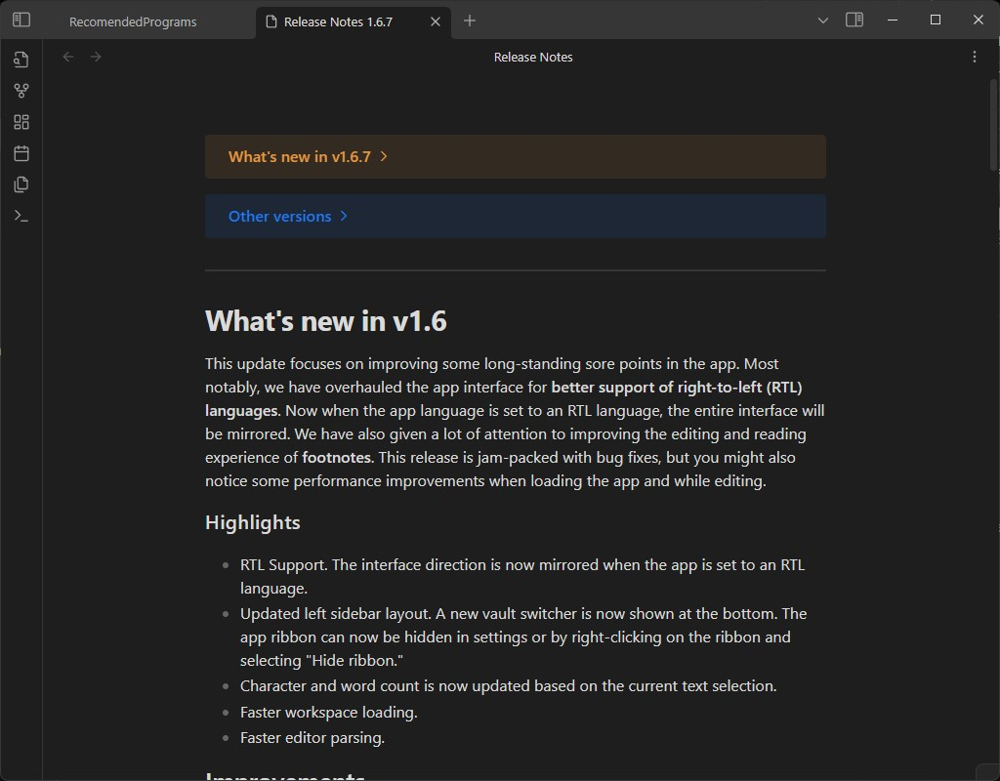
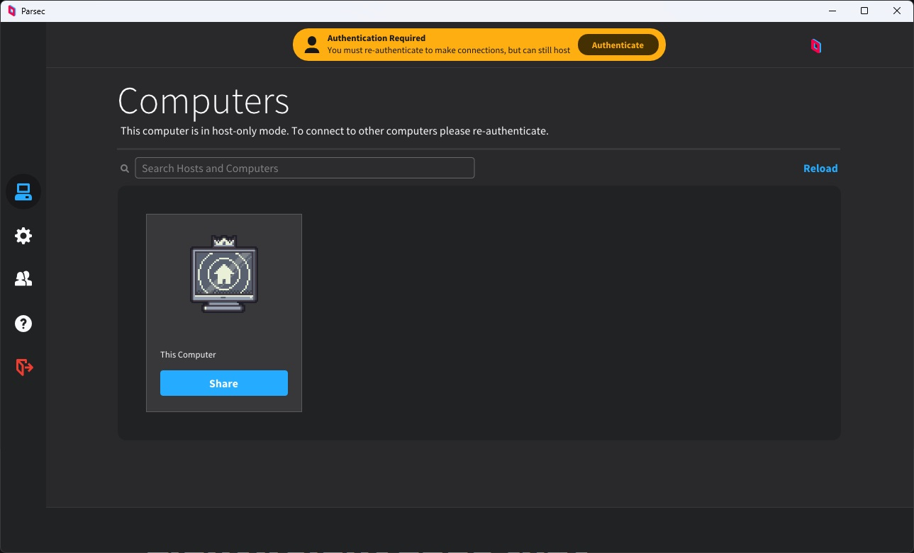
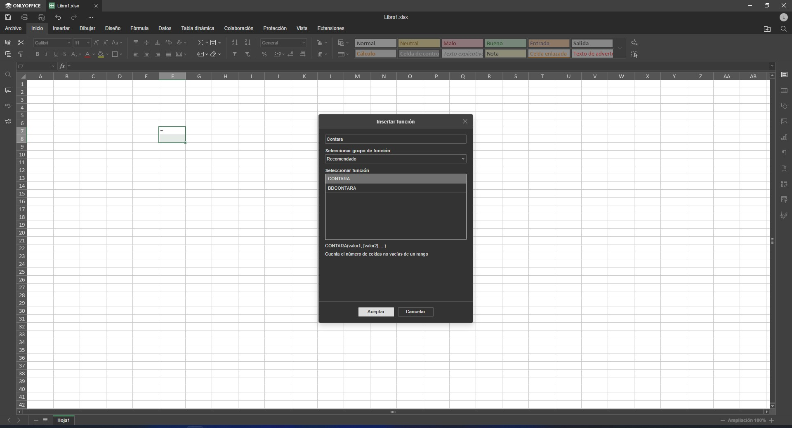
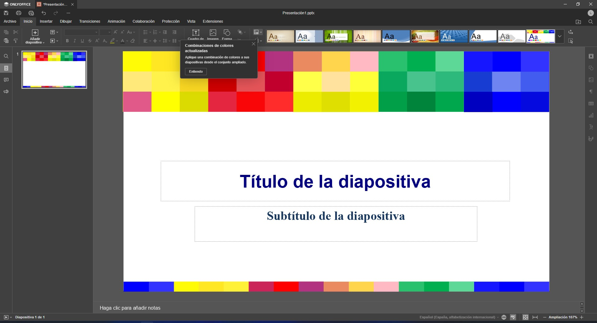
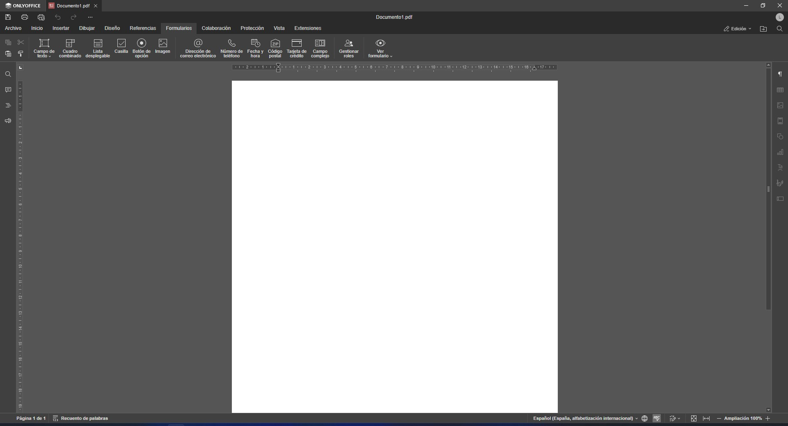
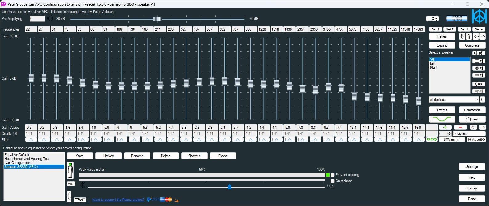

Recomended Programs
- published
- reading time
- 4 minutes
This is a list of FREE programs that I’ve colleted over time, in no particular order that I think a common user needs to know, even if it does not fit your use case, or if you do not find a use for them at this point
General Utilities
Syncthing

Syncthing it’s a simple utility that you can set and forget that allows you to sync your data across multiple devices, free and open source, available in linux, windows, android and more.
Wiztree

Will show you a visual representation of the files on your disk, I’ve tried open source options but honestly as of know this is the best tool of this type.
Obsidian

tldr, the best note taking/studying app. It allows you to create a database conecting ideas by writing markdown code, also to relate and find holes in your knowledge and gives you a visual representation of all the concepts on a database, and waaay much more, also you can install a lot of plugins that extends the software functionality immensely.
Parsec

This is a low latency, propietary (but based on open source libraries), Remote Desktop app, it requires an account but IMO, really worth it, I’ve use this multiple times and I can say that the low latency really helps if you are trying to play games, and the fact that kind of just works out of the box has made this my main RDP program.
KeepassXC
 This is personal preference, pick whatever you want, but this only program, has improved so much my life, if you do have a lot of accounts, or if you have family members or multiple systems that you need to mantain, can’t stop to recommend for you to get a password manager,
it will generate secure passwords save them and also encrypt them under a master password.
This is personal preference, pick whatever you want, but this only program, has improved so much my life, if you do have a lot of accounts, or if you have family members or multiple systems that you need to mantain, can’t stop to recommend for you to get a password manager,
it will generate secure passwords save them and also encrypt them under a master password.
Ninite

This is actually a website that creates a executable file that allows you to install and update in batch all the programs you select every time you run that custom executable. If you are looking for a terminal version of this look below for Chocolatey
OnlyOffice




This is microsoft office but free, you even have a server version if you want to run a server and make your own centralized document processing server, it completely blows libreoffice suite out of the water, and keeps the windows formats and layout.
Peace

I don’t really know how to define this program since it sits on top of equalizerAPO, but it allows you to import a configuration for your audio system, check AutoEQ to learn more
Ventoy

If you possess a desktop pc, I will highly recommend to get a usb over 8gb and install ventoy to it, this tool will allow you to boot multiple isos, and in the case of windows 11 it will even allow you to bypass the TPM 2.0 requirement, not to mention that you can keep using the usb to store data, just make a folder and create a .ventoyignore file on it so it does not scan that folder on startup, in case that you use it for a bunch of files.
Terminal Utilities
I know this section will get the attention to the least amount of people but it’s worth mentioning
Chocolatey
A windows package manager.
It will allow you to install all the programs you want by simply running choco install firefox for example.
it does require a bit of setup but it gives you the ability to automate a complete windows setup on a single script.
If you want an example you can check chocolateyscript.
Flatpak
It’s a software distribution software, it’s distro agnostic and it allows you to install software easily through the terminal of your choice, also it comes preinstalled with a lot of distros. If you want an example on how to make a script of this and automate your installation maybe check out flats.sh
That’s it for now, let me know if should add something else to the list. Thanks for reading bye!